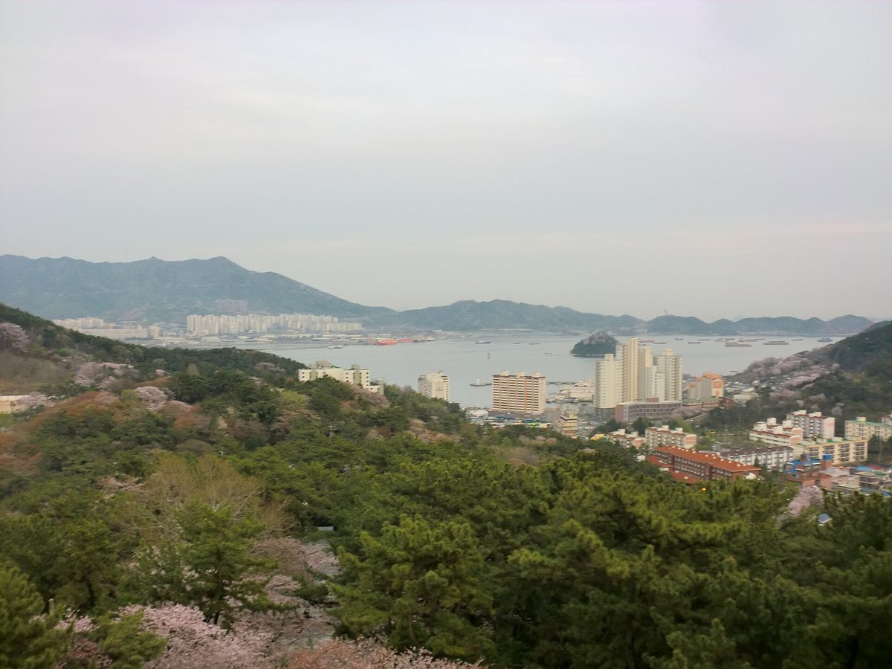

창원시, 덕산매립장 유휴부지 태양광 수익으로 문 닫은 진해 소죽도찜질방 다시 연다

소각장 폐열 끊겨 7월부터 운영 중단…태양광 발전수익은 운영비로, 매립장 증설 주민지원금은 리모델링에, 2028년 7월 재개장 추진
경남 창원시가 소각장 폐쇄로 문을 닫은 진해구 덕산동 소죽도찜질방을 태양광 발전수익으로 다시 운영하기로 하고 2028년 7월 재개장을 추진한다. 2007년 문을 연 소죽도찜질방은 진해소각장에서 나오는 폐열을 주된 에너지원으로 써 왔지만, 소각장이 문을 닫으면서 열 공급이 끊겨 지난 7월부터 운영이 멈췄고 주민들의 재개장 요구가 이어졌다. 시는 덕산매립장 유휴부지 등을 활용한 태양광 발전사업의 수익으로 찜질방 운영비를 대고, 매립장 증설에 따라 지급되는 주민지원금으로 시설을 새로 단장할 계획이다. 강기윤 창원시장은 17일 이동운동장에서 열린 '이동마을 한마음축제'에서 주민들에게 이 계획을 직접 설명하며 "폐열이 사라진 자리에 태양광 발전수익을 채우고 시설도 새롭게 단장해 주민들의 품으로 돌려드리겠다"고 말했다. 다만 태양광 설비 규모와 사업비, 예상 발전수익, 발전사업을 누가 맡을지는 아직 정해지지 않았다.
시민에너지 관점
매립장 유휴부지의 햇빛으로 번 돈을 주민 편의시설 운영비로 돌린다는 구상은, 소각장 폐열에 기대던 마을 시설을 지역 재생에너지가 이어받는 의미 있는 시도다. 매립장 같은 기피시설 옆 주민에게 태양광은 또 하나의 시설일 뿐이라는 시선도 있을 수 있지만, 그 수익이 주민의 생활로 돌아온다면 받아들이는 방식이 달라질 수 있다. 관건은 아직 정해지지 않은 사업 주체로, 외부 사업자가 발전소를 갖고 일부를 나눠 주는 방식이 아니라 주민이 직접 출자해 지분을 갖는 구조여야 찜질방 운영비를 넘어 마을의 자산이 된다. 창원시는 설비 규모와 운영 방식을 정하는 단계부터 덕산동 주민을 발전사업의 주인으로 참여시키는 방안을 함께 검토해야 한다.
출처: 경남신문 2026-10-22 김재경 기자 원문 보기
昌原市、徳山埋立地の遊休地太陽光の収益で閉鎖中の鎮海「ソジュクド健康ランド」を再開へ
焼却場の廃熱が途絶え7月から休業…太陽光の発電収益は運営費に、埋立地増設に伴う住民支援金は改修に充て、2028年7月の再開を目指す
韓国慶尚南道の昌原市は、焼却場の閉鎖で休業した鎮海区徳山洞のソジュクド健康ランド（チムジルバン）を太陽光の発電収益で再び運営することを決め、2028年7月の再開を目指す。2007年に開業したソジュクド健康ランドは鎮海焼却場から出る廃熱を主なエネルギー源としてきたが、焼却場の閉鎖で熱の供給が途絶え、今年7月から休業しており、住民から再開を求める声が続いていた。市は徳山埋立地の遊休地などを活用した太陽光発電事業の収益で健康ランドの運営費を賄い、埋立地の増設に伴って支給される住民支援金で施設を改修する計画だ。カン・ギユン昌原市長は17日、イドン運動場で開かれた「イドン村ハンマウム祭り」で住民にこの計画を直接説明し、「廃熱がなくなった場所を太陽光の発電収益で埋める」と述べた。ただし、太陽光設備の規模や事業費、見込まれる発電収益、発電事業を誰が担うかはまだ決まっていない。
市民エネルギーの視点
埋立地の遊休地に降り注ぐ日差しで得たお金を住民の利便施設の運営費に回すという構想は、焼却場の廃熱に頼っていた地域の施設を地元の再生可能エネルギーが引き継ぐ意味のある試みだ。埋立地のような迷惑施設の近くに住む住民にとって、太陽光はもう一つの施設にすぎないという見方もありうるが、その収益が住民の暮らしに戻ってくるなら受け止め方は変わりうる。鍵はまだ決まっていない事業主体であり、外部の事業者が発電所を持ち一部を分け与える方式ではなく、住民が直接出資して持分を持つ仕組みであってこそ、健康ランドの運営費を超えて地域の資産になる。昌原市は設備規模と運営方式を決める段階から、徳山洞の住民を発電事業の持ち主として参加させる方策もあわせて検討すべきだ。
出典: 慶南新聞（Gyeongnam Shinmun） 2026-10-22 キム・ジェギョン記者 原文を読む
韩国昌原市拟用德山填埋场闲置用地光伏收益，重开停业的镇海小竹岛汗蒸房
焚烧厂余热中断，7月起停业…光伏发电收益用作运营费，填埋场扩建带来的居民支援金用于改造，力争2028年7月重新开放
韩国庆尚南道昌原市决定用光伏发电收益，重新运营因焚烧厂关闭而停业的镇海区德山洞小竹岛汗蒸房，并力争于2028年7月重新开放。小竹岛汗蒸房于2007年开业，一直以镇海焚烧厂的余热为主要能源，但焚烧厂关闭后供热中断，今年7月起停止营业，居民要求重新开放的呼声不断。市政府计划用利用德山填埋场闲置用地等开展的光伏发电项目收益支付汗蒸房的运营费用，并用填埋场扩建所发放的居民支援金对设施进行翻新。昌原市长Kang Gi-yun于17日在二洞运动场举行的“二洞村同心庆典”上亲自向居民说明了这一计划，表示要用光伏发电收益填补余热消失后的空缺。不过，光伏设备规模、项目经费、预期发电收益以及由谁承担发电项目，目前都尚未确定。
市民能源视角
用填埋场闲置用地上的阳光赚来的钱支付居民便利设施的运营费，这一构想让本地可再生能源接替了原本依赖焚烧厂余热的社区设施，是有意义的尝试。对住在填埋场这类邻避设施旁的居民来说，光伏或许只是又一座设施，但如果收益能回到居民的生活中，接受的方式就可能不同。关键在于尚未确定的项目主体：不是由外部企业拥有电站再分出一部分，而是由居民直接出资持股，才能让它超越汗蒸房运营费，成为社区的资产。昌原市应从确定设备规模和运营方式的阶段起，就一并研究让德山洞居民作为电站主人参与的方案。
来源: 庆南新闻（Gyeongnam Shinmun） 2026-10-22 Kim Jae-kyung 记者 查看原文
Changwon to reopen closed Jinhae sauna with income from solar on idle Deoksan landfill land
Sojukdo sauna shut in July after incinerator waste heat stopped; solar revenue to cover running costs and landfill expansion support funds to pay for renovation, with reopening targeted for July 2028
Changwon City in South Gyeongsang Province plans to run the Sojukdo sauna in Deoksan-dong, Jinhae-gu, which closed after a waste incinerator shut down, on income from solar power, aiming to reopen it in July 2028. The sauna, opened in 2007, had relied mainly on waste heat from the Jinhae incinerator, but the heat supply stopped when the incinerator closed and the facility has been shut since July, prompting continued calls from residents to reopen it. The city plans to cover the sauna's running costs with revenue from a solar project using idle land at the Deoksan landfill and other sites, and to renovate the building with resident support funds paid in connection with the landfill's expansion. Changwon Mayor Kang Gi-yun explained the plan directly to residents at the Idong village festival held at Idong sports ground on the 17th, saying solar income would fill the gap left by the lost waste heat. The size of the solar installation, the project cost, expected revenue and who will run the generation business have not yet been decided.
Citizen Energy View
Using money earned from sunlight on idle landfill land to run a local amenity is a meaningful attempt to let local renewable energy take over from the incinerator heat a neighbourhood facility once depended on. Residents living next to an unwanted facility such as a landfill may see solar as just one more installation, but their view can change if the income comes back into their daily lives. What matters now is the operator, which has yet to be decided: only if residents invest directly and hold a stake, rather than an outside developer owning the plant and handing over a share, will it become a community asset beyond paying for the sauna. Changwon should consider bringing Deoksan-dong residents in as owners of the generation project from the stage when the capacity and operating model are set.
Source: Gyeongnam Shinmun 2026-10-22 Kim Jae-kyung Read the original